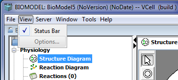

The View menu bar option allows the user to change the view settings of the currently open VCell document.

The choices available to the user under the View menu are Status and Options. Choosing the Status menu allows user to display/hide the status bar.
The Options menu is currently disabled.